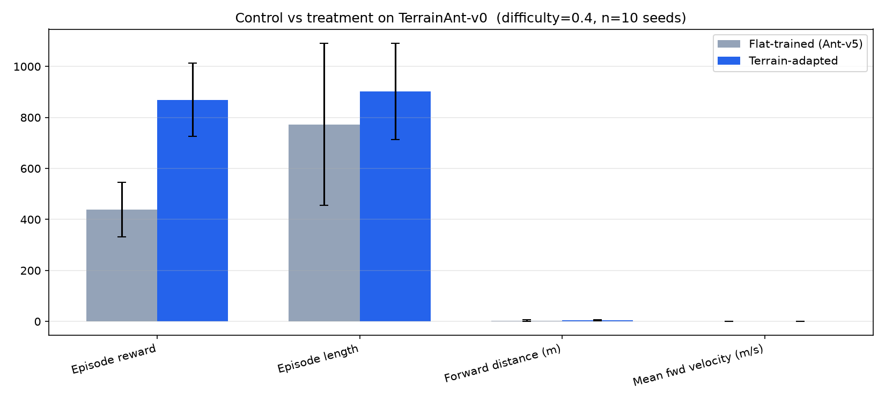
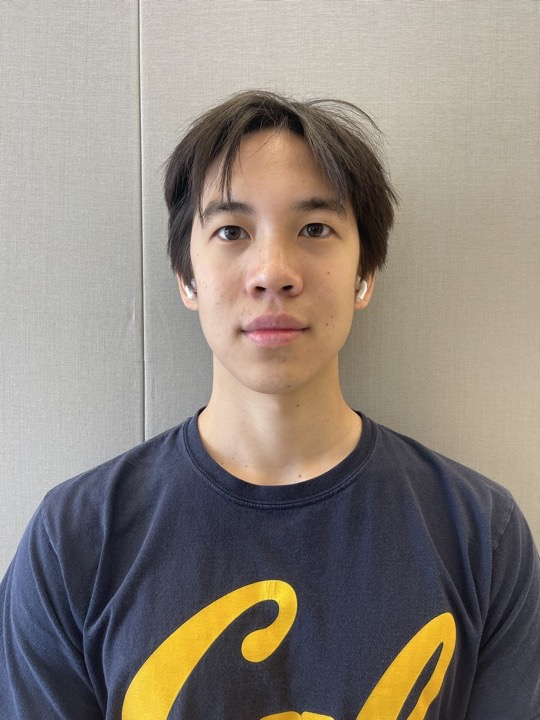

Computer vision and reinforcement learning. CS at UC Berkeley, class of 2028.
I train perception and control systems, then check them against a baseline. If a number is on this page, the code or the recording is one click away.
Selected work
Quadruped locomotion with PPO
Solo · MuJoCo, Gymnasium, Stable-Baselines3
A policy trained only on flat ground looks fine in the demo, then face-plants the first time the floor is uneven or a leg stops working. I wanted numbers for that, not a cherry-picked clip.
I trained specialists (terrain, per-leg damage) and a router that picks a checkpoint from which leg is hurt, then scored every condition against the flat-ground baseline on 10 matched random seeds. Sudden amputation is still mostly unsolved. I left that result in because hiding it would make the rest look better than it is.
Terrain comparison. Flat-trained policy vs terrain-adapted, same seeds.

Control vs treatment on TerrainAnt-v0, difficulty 0.4, n=10.
Terrain reward 893 ± 130 vs 424 ± 106. Damage fall rate 20% vs 100%.Sudden amputation still falls 80% of the time.
I wanted to know what a morph actually is, not wrap cv2.warpAffine and call it a project. The geometry is dlib landmarks, Delaunay triangles, a three-point affine solve into a 2×3 matrix, then inverse warping with bilinear interpolation onto a midway shape.

Two of the source photographs the warp is built from.
What I would redo: ship a short GIF of the interpolation, not just stills. The interesting part is the in-between frames.
Solo · LangGraph, Playwright, Qdrant, FastAPI, k3s, Terraform
Asking a language model whether a Craigslist listing is “cheap” is how you get confident nonsense. Price arithmetic stays in ordinary code. The model only ranks candidates after that, and rejections get embedded into a local Qdrant store so the filter tightens over a session.
I also stopped running it as one process. Four services on a k3s cluster I provision with Terraform and tear down when the demo is over, so the bill stays under a dime.
Underpriced listings: 2 of 30, then 51 of 120.Demo infra under $0.10 per session.
My slice: the vision pipeline. Crews and the capture rig are shared with the rest of the company.
DOT submissions still get depth by hand, on paint marks, in the field. LIDAR would have solved the measurement cleanly and blown the margin, which is why this is cameras. Object detection finds the pile, YOLO and line detection read the marks, a digit detector reads the numbers, audio-visual sync isolates each hammer hit, then a depth map turns pixels into inches.
Field interviews made the constraints obvious: messy hand-drawn marks, a mostly Spanish-speaking crew, people walking through the shot. We filed a provisional patent on a tripod 1000fps camera with a Jetson Orin. I do not have public stills from the site.
Jan – May 2025
Akkadian lemmatization
CDSS, UC Berkeley · Data science research intern
My slice: the BART fine-tune and the alignment pipeline. I also ran the team when it had no actual lead.
Low-resource NLP on ORACC cuneiform. Fine-tuned BART for lemma forms and beat the open-source baselines we compared against by 15% on Levenshtein distance. Presented at the UC Berkeley Discovery Symposium.
May – Aug 2025
Customs logistics
CACI International · Software engineering intern
My slice: frontend and backend tickets on an existing Angular / Spring Boot / Postgres app, plus test coverage.
Built features for U.S. Customs field officers and raised database test coverage about 20%. The useful part was getting productive in a large codebase I did not start.
Earlier
Floras and IT Hired Guns
Software engineering intern
My slice: Flutter client work.
A carbon-offset marketplace on Patch.io ESG data, and loyalty apps (HotSpot, Kenjo) for unbranded gas stations with live pricing and maps.
Also
Context Custodian
Workspace hygiene agent. Quarantine and archive, never delete. Regex, then vectors, then an LLM, with a fail-open fallback.